每個 agent 一個 worktree
從命令選擇區在新的 git worktree 開分頁；移除前會先告訴你會失去什麼。
原生 Rust 與 Direct3D，內部沒有網頁執行環境；每個分頁都會告訴你哪個 agent 在等你。
scoop install koukeneko/nekominal把游標移到某一層，看它做什麼。
Nekominal.exe 約 9 MB，是用 Rust 與 Direct3D 11 寫的原生程式；ConPTY 的兩個檔案放在旁邊，整個資料夾約 10 MB。沒有 Electron、沒有 WebView，也不用另外安裝執行環境。視窗只在畫面有變化時才重繪，你沒在看的終端機幾乎不花資源。
三個終端機都在同一台 Windows 11 機器上，用同一種方法量測：預設設定、冷啟動、執行 pwsh，各取五輪的中位數。記憶體為終端機本身與其 OpenConsole 的 working set，不含 shell。「就緒」指 shell 啟動完成、開始等待輸入；閒置 CPU 是開著一個分頁、不操作時每 20 秒的處理器時間，每輪量三個窗口取中位數。版本為 Nekominal 0.2.14、Windows Terminal 1.24、Warp 0.2026.10.14（Warp 預設設定，只關閉「啟動時還原視窗」）。
在分頁裡執行 Claude Code、Codex、Gemini CLI 或 Aider，分頁就會顯示它是工作中、等你回應、已完成還是失敗。側邊欄依狀態分組，標題列會數出有幾個在等你，按 Ctrl+Shift+U 就跳到下一個。不用另外設定。
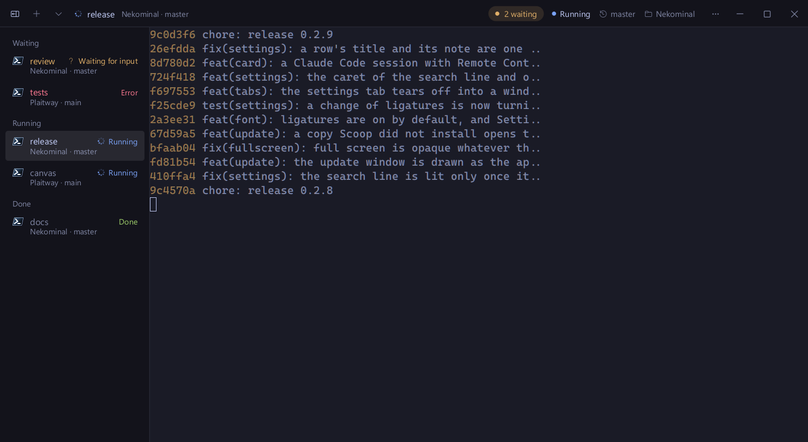
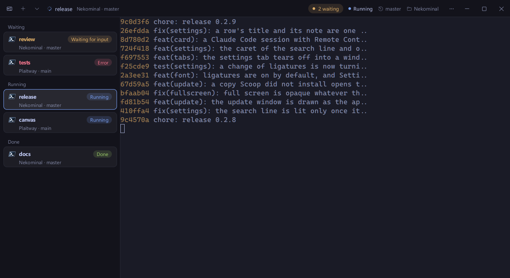
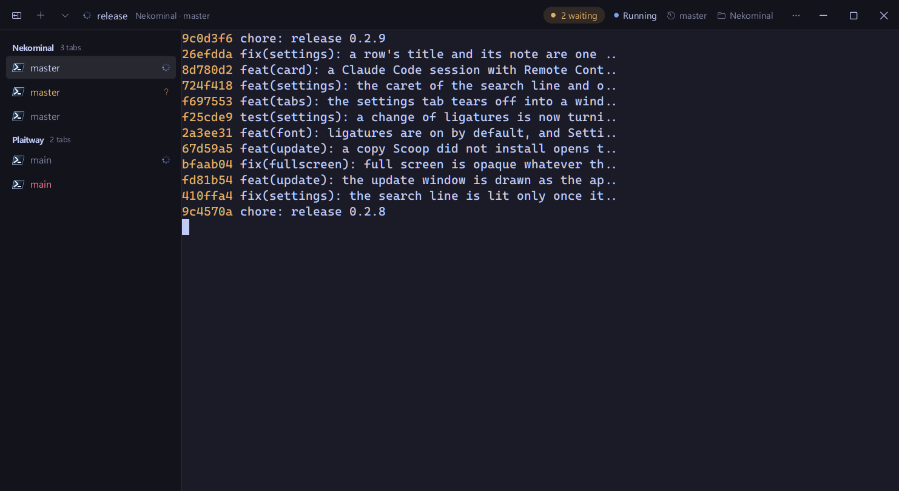
使用 Claude Code 時，標題列會顯示模型、context 用量、費用與時間。滑鼠移到計量條上，可以看到快取讀取、快取寫入、新輸入各佔多少，以及這個工作階段的 token 與程式碼行數。
工作階段連上 Remote Control 時，也能在那裡開啟或複製連結。
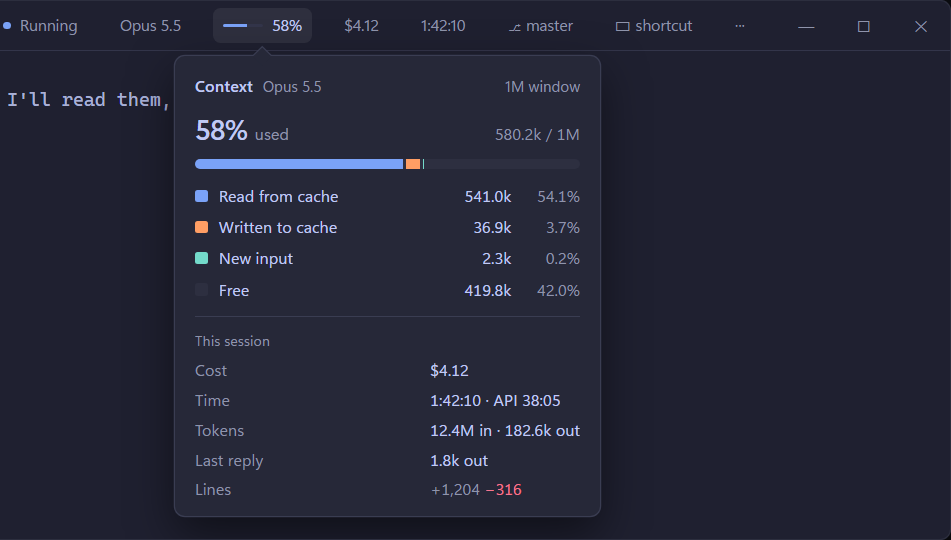
標題列會數出有幾個 subagent 在跑、幾個已經結束，側邊欄的每一列也會標出該分頁的 agent 正在跑幾個。
點開卡片，每個 subagent 在做什麼一目了然；workflow 則逐階段列出進度。
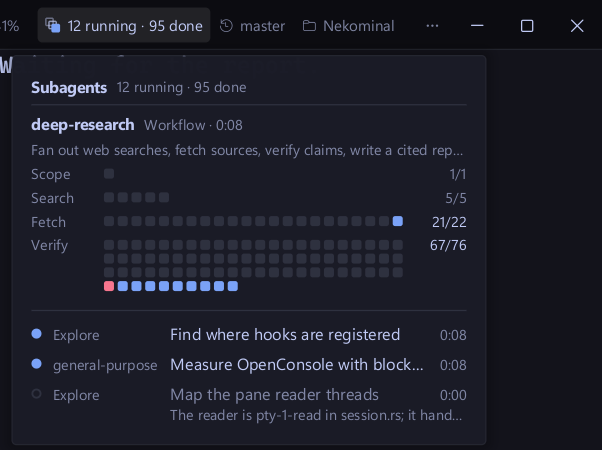
卡片的任何一列都能打開抽屜：看這個 subagent 被交辦什麼、呼叫了哪些工具、回了什麼；workflow 則看它的各個階段與 agent。
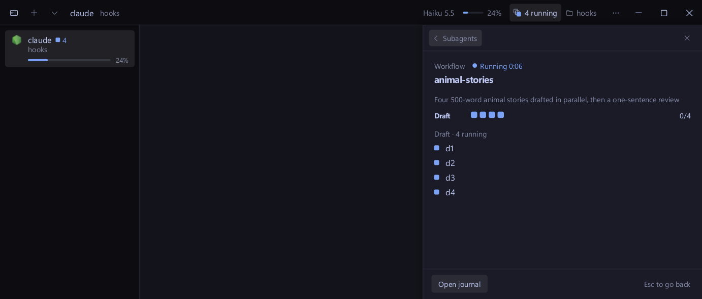
從命令選擇區在新的 git worktree 開分頁；移除前會先告訴你會失去什麼。
按「更新並重新啟動」，每個 shell 與 agent 都會在新版本中繼續執行。
agent 需要你時，可透過 ntfy 或 webhook 傳到手機。
nekominal cli 能列出、開啟、分割與讀取窗格，讓你自己的工具來操作它。
分割窗格、拖出分頁、Win+` 下拉視窗、儲存版面與還原工作階段。網址、路徑與 hash 的提示模式，在編輯器開啟 file:line，搜尋所有分頁。Sixel 與 kitty 圖片、字型連字、Mica 與壓克力背景，並可匯入 Windows Terminal 與 iTerm2 的配色。
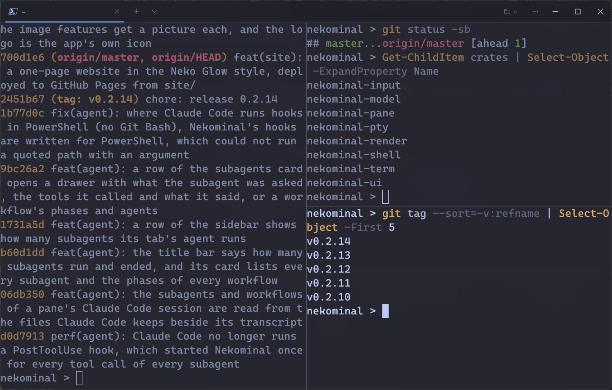
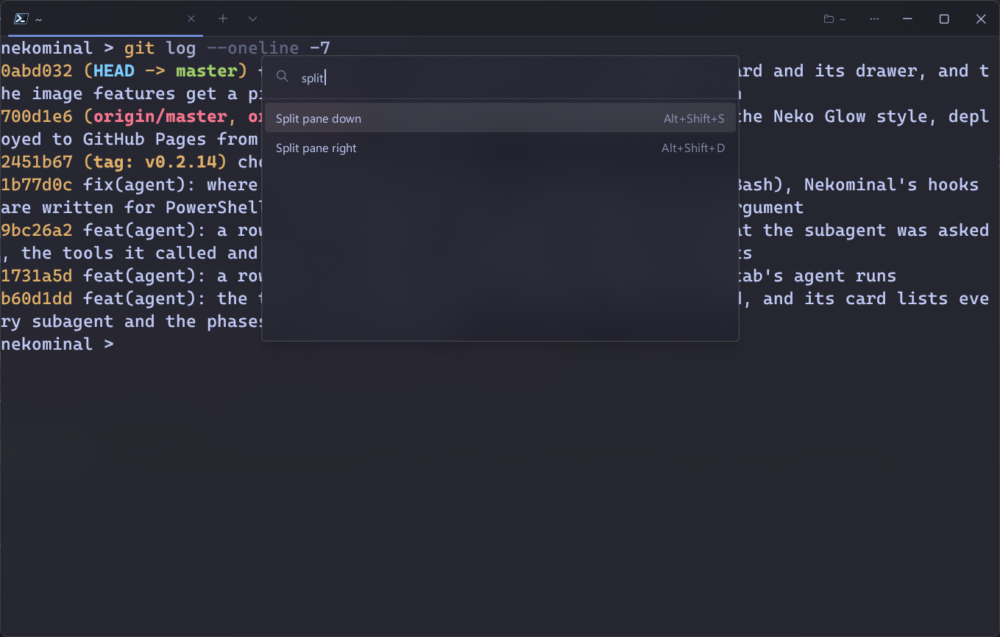
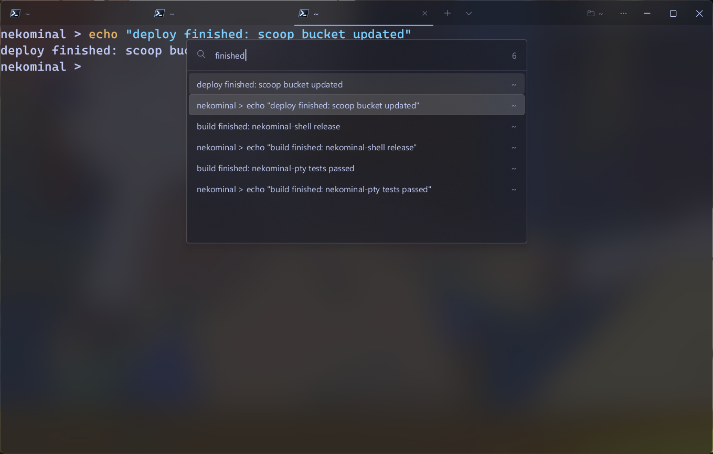
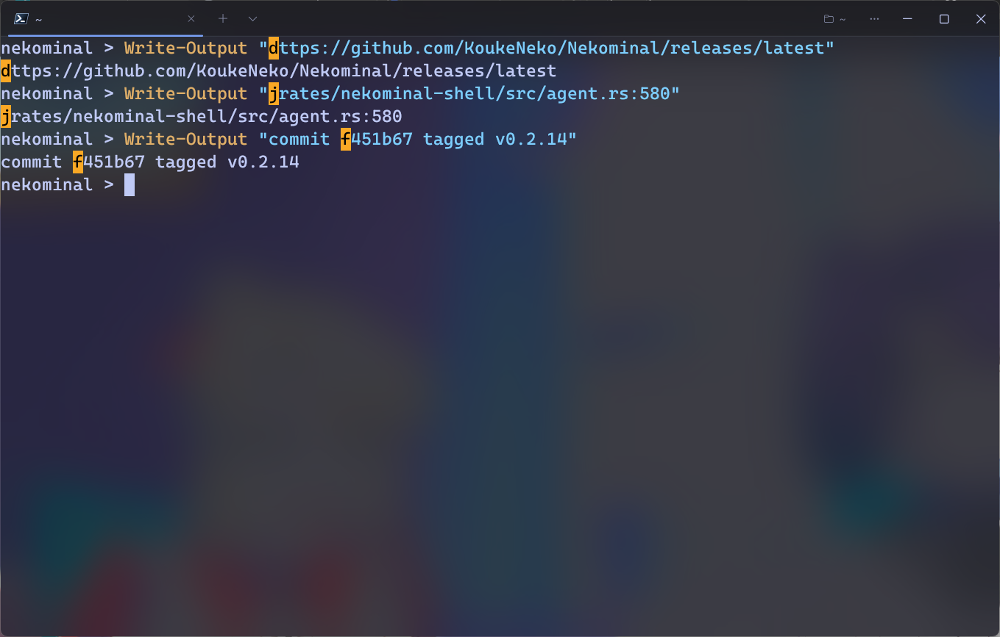
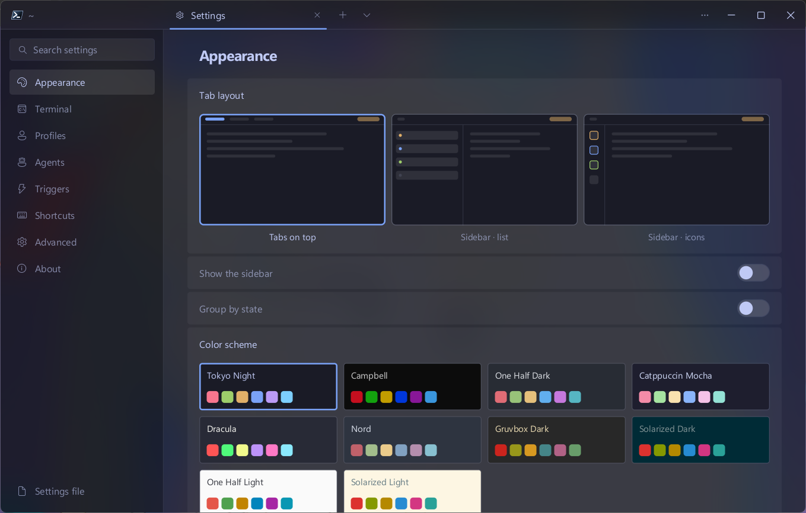
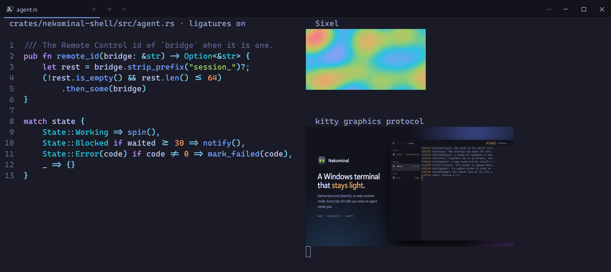
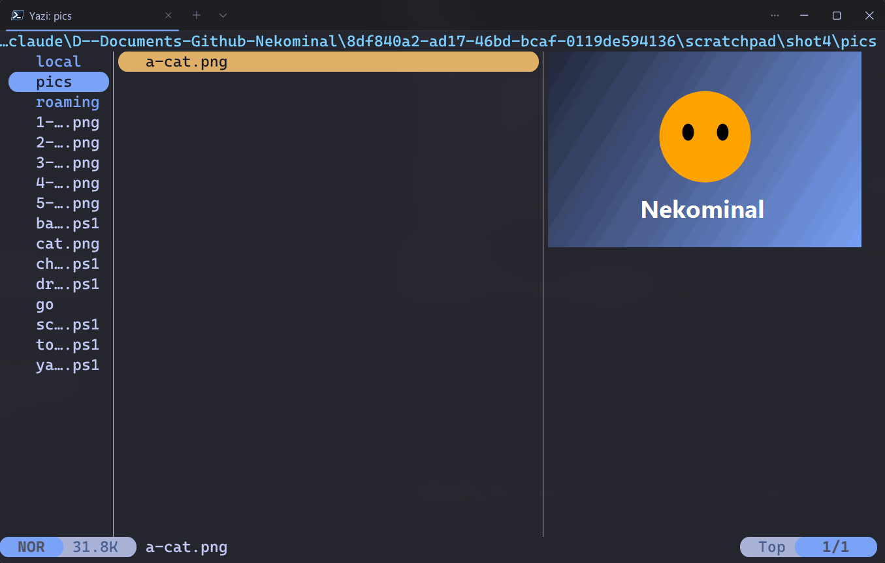
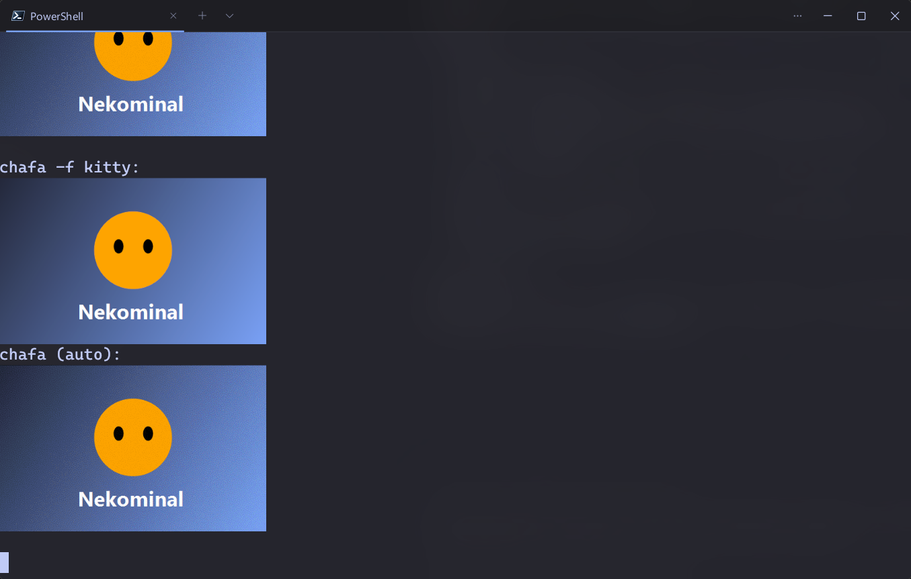
所有命令都能在命令選擇區找到，所有快速鍵都可以在設定中修改。
scoop bucket add koukeneko https://github.com/KoukeNeko/scoop-bucket
scoop install koukeneko/nekominal也可以下載 zip，解壓後執行 Nekominal.exe。支援 Windows 11，x64 或 ARM64。